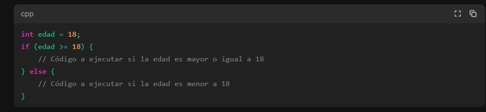
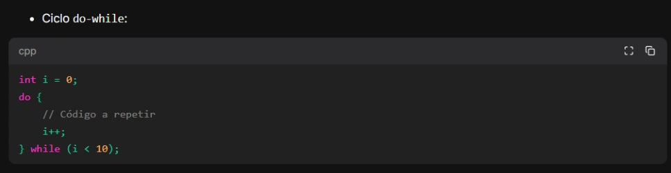
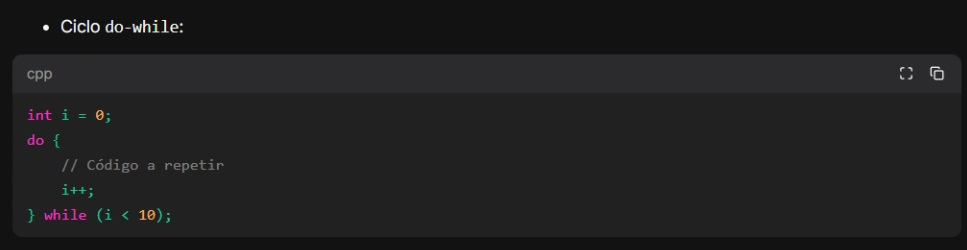
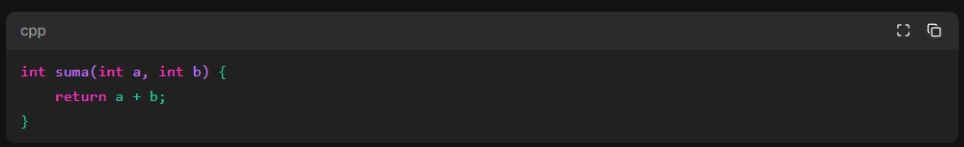
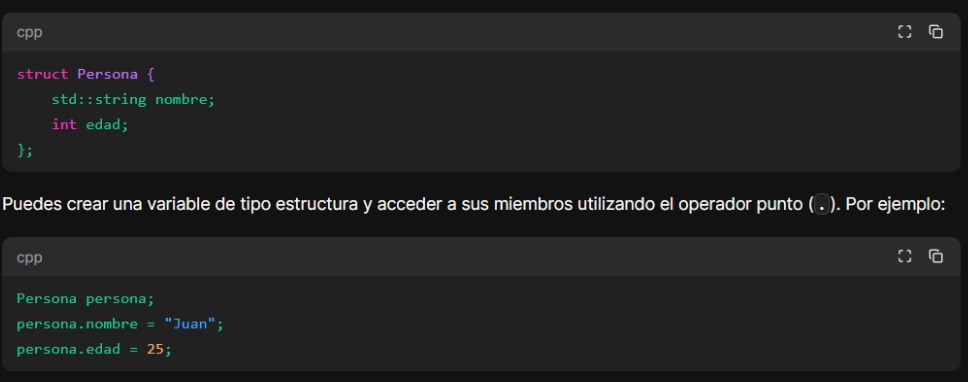
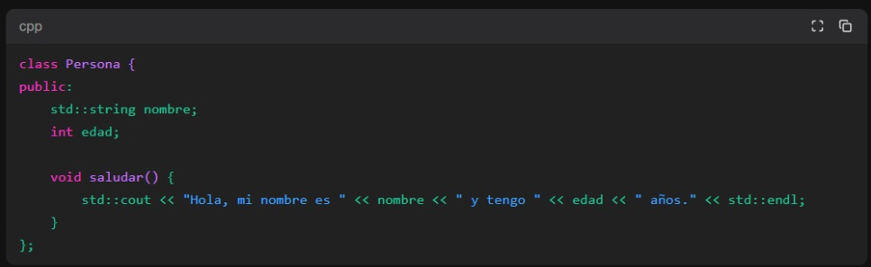
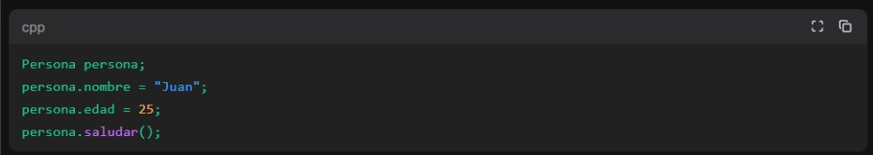

Algobyte
CURSO DE C++
Creación de Variables y Constantes
En C++, puedes crear variables utilizando la sintaxis: tipo_de_dato nombre_de_variable;. Por ejemplo, para crear una variable entera llamada mi_variable, puedes hacer lo siguiente: int mi_variable;. Luego, puedes asignarle un valor utilizando el operador de asignación =. Por ejemplo: mi_variable = 10;. También puedes crear y asignar una variable en una sola línea: int mi_variable = 10;.En cuanto a las constantes, en C++ puedes utilizar la palabra clave const para declarar una constante. Por ejemplo, para declarar una constante entera llamada MI_CONSTANTE con un valor de 100, puedes hacer lo siguiente: const int MI_CONSTANTE = 100;. Una vez que se ha asignado un valor a una constante, no se puede cambiar.
Tipos de Datos
C++ tiene varios tipos de datos incorporados, incluyendo: Enteros: Representan números enteros sin decimales. Por ejemplo: int, short, long, unsigned int, etc. Flotantes: Representan números con decimales. Por ejemplo: float, double. Caracteres: Representan caracteres individuales. Por ejemplo: char. Booleanos: Representan valores de verdad, es decir, true o false. Por ejemplo: bool. Cadenas de texto: Representan secuencias de caracteres. En C++, las cadenas de texto se pueden representar utilizando la clase std::string.
Condicionales
En C++, puedes utilizar condicionales para tomar decisiones en tu código. Los condicionales más comunes son if, else if y else. Puedes utilizar operadores de comparación como == (igual a), != (diferente de), < (menor que), > (mayor que), <= (menor o igual que), >= (mayor o igual que) para evaluar condiciones. Por ejemplo:
Ciclos
En C++, puedes utilizar ciclos para repetir un bloque de código varias veces. Los ciclos más comunes son for, while y do-while. Por ejemplo:
 

Funciones
En C++, puedes definir tus propias funciones para realizar tareas específicas. Una función se define utilizando la sintaxis: tipo_de_retorno nombre_de_funcion(parametros) { // Código de la función }. Por ejemplo: Puedes llamar a una función utilizando su nombre y pasando los argumentos necesarios. Por ejemplo: int resultado = suma(5, 3);.
Estructuras de Datos Básicas
En C++, puedes utilizar estructuras de datos básicas como arreglos y estructuras. Arreglos: Un arreglo es una colección de elementos del mismo tipo. Puedes declarar un arreglo utilizando la sintaxis: tipo_de_dato nombre_arreglo[tamaño];. Por ejemplo: int numeros[5];. Puedes acceder a los elementos del arreglo utilizando el índice correspondiente. Por ejemplo: numeros[0] = 10;. Estructuras: Una estructura es una forma de agrupar varios tipos de datos relacionados en una sola entidad. Puedes definir una estructura utilizando la sintaxis: struct nombre_estructura { tipo_dato1 nombre1; tipo_dato2 nombre2; ... };. Por ejemplo:
Programación Orientada a Objetos
C++ es un lenguaje que admite la programación orientada a objetos (POO). En la POO, puedes definir clases que representan objetos y encapsulan datos y funciones relacionadas. Una clase se define utilizando la sintaxis: class nombre_clase { // Definición de la clase };. Por ejemplo:
Puedes crear objetos de una clase utilizando la sintaxis: nombre_clase nombre_objeto;. Por ejemplo: En la programación orientada a objetos, también se utilizan conceptos como la herencia, el polimorfismo y la encapsulación, que permiten una mayor flexibilidad y reutilización de código.
